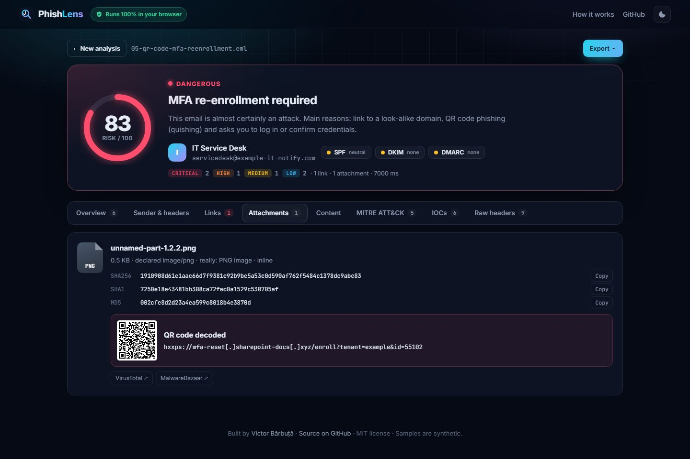

Email security · 6 min read · November 2026
Catching QR-code phishing without uploading the email
The newest phishing emails barely contain any text: just a logo and a QR code saying "re-enroll your MFA". Link scanners see no link at all. Here's how PhishLens finds the hidden URL, recognises a fake domain even when it's spelled with letters from another alphabet, and does all of it without the email ever leaving your browser.
Why QR codes work so well for attackers
- No URL in the text. Gateways rewrite and scan links; an image has nothing to rewrite.
- The click moves to a phone, which usually has no corporate web filter and a tiny address bar.
- Image-only emails dodge text filters that look for words like "verify your password".
So the first signal PhishLens uses is simple: an HTML email with images but almost no visible text gets flagged on its own, because that's how quishing is delivered.
Step 1: find every image, even the hidden ones
PhishLens parses the raw .eml with its own MIME parser (multipart, base64, quoted-printable, RFC 2047 headers), so it sees attachments byte for byte. QR codes hide in three places: real attachments, inline images referenced as cid: from the HTML, and images embedded directly as data:image/png;base64,… inside the HTML. All three are collected.
Step 2: decode the QR code locally
In the browser, the image bytes go into a Blob, then createImageBitmap and a canvas give raw pixels, which jsQR turns into text. Small codes decode better when enlarged, so a second pass upscales 2× with smoothing off.
The command-line version has no canvas. Rather than pulling in an image library, I wrote a small PNG decoder: walk the chunks, inflate the IDAT data with Node's zlib, undo the per-row filters (Sub, Up, Average, Paeth), expand 1-bit grayscale or palette pixels to RGBA. About 100 lines, and the CLI stays dependency-free.
// Paeth filter: predict each byte from left, up and upper-left
const p = a + up - c;
const pa = Math.abs(p - a), pb = Math.abs(p - up), pc = Math.abs(p - c);
v += pa <= pb && pa <= pc ? a : pb <= pc ? up : c;
mfa-reset.sharepoint-docs.xyz, a SharePoint look-alike (synthetic sample).Step 3: is that domain pretending to be someone?
A decoded URL then goes through the same link analysis as every other link. The hardest check is the look-alike domain, because attackers have three tricks:
Combosquatting: sharepoint-docs.xyz
A real brand name glued to other words. PhishLens splits the registrable domain into tokens and compares them with a list of the brands phishers impersonate most (Microsoft, PayPal, DHL, banks…, including Moldovan ones like maib and Poșta Moldovei). If the brand appears but the domain isn't one the brand owns, it's flagged.
Character substitution: micros0ft-secure-login.com
Both sides are reduced to a "skeleton" before comparing: 0→o, 1/l/i→l, rn→m, vv→w, plus Cyrillic and Greek look-alikes mapped to Latin. micros0ft and microsoft share a skeleton. An edit-distance check then catches typos like paypa1.
Homographs: pаypal.com
That "a" is Cyrillic (U+0430). Browsers and URL parsers convert such domains to punycode, here xn--pypal-4ve.com. PhishLens decodes punycode itself (RFC 3492), then checks which scripts the name mixes. Latin plus Cyrillic in one label is flagged critical: the domain only looks familiar.
A link whose text shows one domain but whose target is another ("https://www.paypal.com" pointing at bit.ly) is caught separately. It's one of the most reliable phishing signals there is.
Why everything runs in the browser
Suspicious emails often contain real names, internal addresses and sometimes the victim's own data. Uploading them to an online scanner is a privacy problem in itself. PhishLens is a static page: parsing, QR decoding, scoring and exports all happen in JavaScript on your machine. The preview of the email is rendered in a sandboxed iframe with scripts removed, remote images blocked and links disabled, so opening an evil email in the analyzer can't hurt you either.
To make sure it doesn't cry wolf, the sample set includes a genuine, fully authenticated GitHub notification. It scores 0/100. The CEO-fraud sample, which passes SPF, DKIM and DMARC because it's sent from real Gmail, still scores "likely phishing" from its wording and its Reply-To trick.